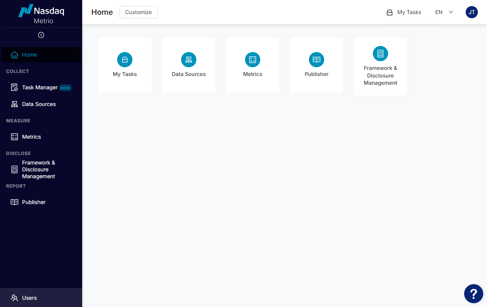
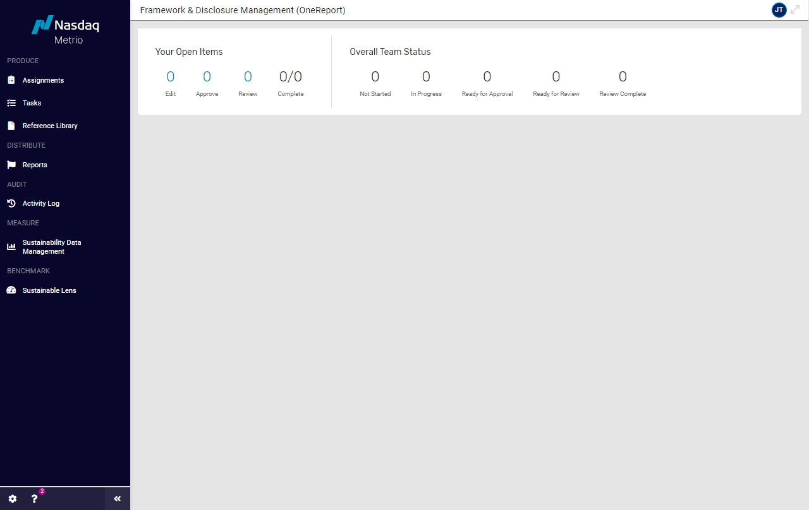

Which Nasdaq Metrio™ product do I have?
If you see the following home page upon logging in, you have access to Nasdaq Metrio™ Sustainability Data Management:

If you see the following home page upon logging in, you have access to Nasdaq Metrio™ Framework & Disclosure Management:

I have multiple Nasdaq Metrio modules. Can I find information about all of them within this knowledge center?
Yes. If the product help guide you find is applicable to all Nasdaq Metrio, the banner will show Nasdaq Metrio alone. If applicable to a particular module, such as Sustainability Data Management or Framework & Disclosure Management, the corresponding header will appear above the guide.
What can I find in this expanded Nasdaq Metrio knowledge center?
- Nasdaq Metrio Product Information for: guides, FAQs, troubleshooting, tips, reminders, and context about how to use a particular feature, often with context to help you understand why and how to use the feature depending on your objectives and organization's potential process and participation.
- Information about Other Products and Services: Nasdaq products and services to help you and your company do more with less, with effectiveness and efficiency, and empowering companies to be resilient, strategic, sustainable, and transparent.
Is Single Sign On (SSO) supported?
Yes, all modules available within Nasdaq Metrio support Single Sign On (SSO).
Is Multi-factor Authentication (MFA) supported?
Yes, all modules available within Nasdaq Metrio support Multi-factor Authentication (MFA).
Can Nasdaq Metrio™ Framework & Disclosure Management be used to develop a reporting framework that is specific to my company?
Yes. We are happy to discuss options for different third-party frameworks or your company's custom metrics, including where/how to best manage them within Nasdaq Metrio. Supplemental fees are involved.
How many unique users can have access to one account within Nasdaq Metrio™ Framework & Disclosure Management?
Each user needs to have his/her own login, but we do not limit the number of users for our subscriptions. We want you to to be able to engage your team and not cut corners by limited or charging user fees.
How can I transfer my data from Nasdaq Metrio™ Framework & Disclosure Management to the relevant reporting website(s)?
Nasdaq Metrio personnel can assist with these transfer processes, whether manual or automated. Frequently, we can not only transfer data to the rater portal, but can jump start your initial work with transferring or pre-populated your data into Nasdaq Metrio as well.